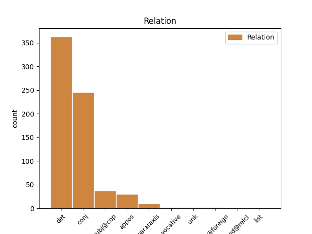
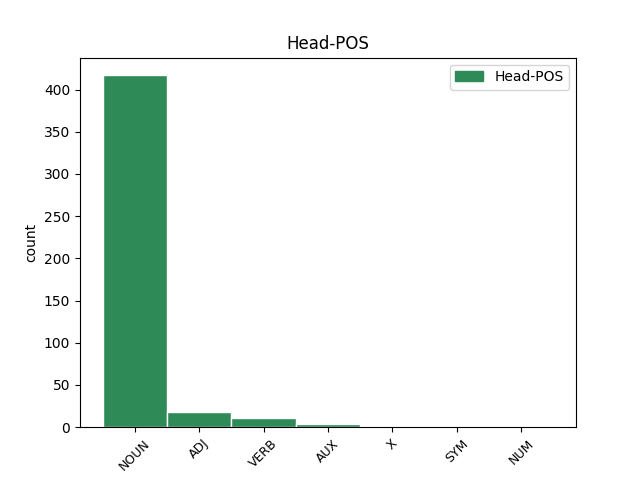
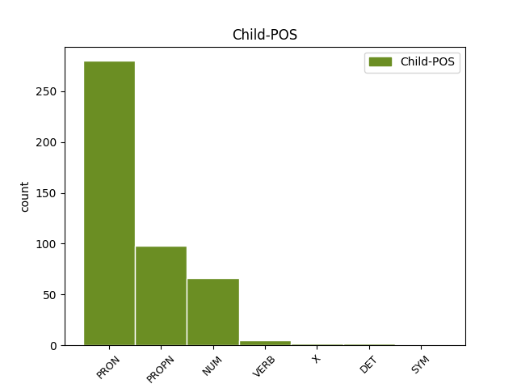

Distribution of features within this leaf



Agreement Rules sorted by frequency.
- When the dependent token is the determiner(det) of the head token, and the dependent token is DET.
1 Ja _ _ _ _ 0 _ _ _
2 muideks _ _ _ _ 0 _ _ _
3 see see DET P Case=Nom|Number=Sing|PronType=Dem 4 det _ _
4 krõbin krõbin NOUN S Case=Nom|Number=Sing 0 _ _ _
5 on _ _ _ _ 0 _ _ _
6 kohe _ _ _ _ 0 _ _ _
7 algusest _ _ _ _ 0 _ _ _
8 saati _ _ _ _ 0 _ _ _
9 mu _ _ _ _ 0 _ _ _
10 telefonil _ _ _ _ 0 _ _ _
11 olnud _ _ _ _ 0 _ _ _
12 , _ _ _ _ 0 _ _ _
13 peale _ _ _ _ 0 _ _ _
14 pakist _ _ _ _ 0 _ _ _
15 väljavõttu _ _ _ _ 0 _ _ _
16 panin _ _ _ _ 0 _ _ _
17 tähele _ _ _ _ 0 _ _ _
18 . _ _ _ _ 0 _ _ _
1 Krõbin _ _ _ _ 0 _ _ _
2 kül _ _ _ _ 0 _ _ _
3 ei _ _ _ _ 0 _ _ _
4 ole _ _ _ _ 0 _ _ _
5 normaalne _ _ _ _ 0 _ _ _
6 ... _ _ _ _ 0 _ _ _
7 kui _ _ _ _ 0 _ _ _
8 samsungi samsung PROPN S Case=Gen|Number=Sing 0 _ _ _
9 ja _ _ _ _ 0 _ _ _
10 ifööno ifööno NOUN S Case=Gen|Number=Sing 8 conj _ _
11 mehed _ _ _ _ 0 _ _ _
12 seda _ _ _ _ 0 _ _ _
13 normaalseks _ _ _ _ 0 _ _ _
14 peavad _ _ _ _ 0 _ _ _
15 siis _ _ _ _ 0 _ _ _
16 edu _ _ _ _ 0 _ _ _
17 teile _ _ _ _ 0 _ _ _
18 . _ _ _ _ 0 _ _ _
1 Muide _ _ _ _ 0 _ _ _
2 alles _ _ _ _ 0 _ _ _
3 ükspäev _ _ _ _ 0 _ _ _
4 lugesin _ _ _ _ 0 _ _ _
5 Türgis Türgi PROPN S Case=Ine|Number=Sing 0 _ _ _
6 , _ _ _ _ 0 _ _ _
7 Egipütuses Egiptus PROPN S Case=Ine|Number=Sing 5 conj _ _
8 jm _ _ _ _ 0 _ _ _
9 islamimaa _ _ _ _ 0 _ _ _
10 kronoloogilist _ _ _ _ 0 _ _ _
11 järjekorda _ _ _ _ 0 _ _ _
12 , _ _ _ _ 0 _ _ _
13 kus _ _ _ _ 0 _ _ _
14 olid _ _ _ _ 0 _ _ _
15 lausa _ _ _ _ 0 _ _ _
16 nimekirjad _ _ _ _ 0 _ _ _
17 . _ _ _ _ 0 _ _ _
1 Telklaager telk_laager NOUN S Case=Nom|Number=Sing 0 _ _ _
2 Rock rock NOUN S Case=Nom|Number=Sing 1 appos _ _
3 Ramp _ _ _ _ 0 _ _ _
4 2012 _ _ _ _ 0 _ _ _
5 on _ _ _ _ 0 _ _ _
6 korrtaldatud _ _ _ _ 0 _ _ _
7 telklaager _ _ _ _ 0 _ _ _
8 . _ _ _ _ 0 _ _ _
1 1 _ _ _ _ 0 _ _ _
2 ei _ _ _ _ 0 _ _ _
3 ole _ _ _ _ 0 _ _ _
4 massiline _ _ _ _ 0 _ _ _
5 , _ _ _ _ 0 _ _ _
6 ja _ _ _ _ 0 _ _ _
7 võttes _ _ _ _ 0 _ _ _
8 konsentratsiooniks _ _ _ _ 0 _ _ _
9 see see PRON P Case=Nom|Number=Sing|PronType=Dem 0 _ _ _
10 siin _ _ _ _ 0 _ _ _
11 + _ _ _ _ 0 _ _ _
12 froniuse _ _ _ _ 0 _ _ _
13 oma oma PRON P Case=Nom|Number=Sing|Poss=Yes|PronType=Prs 9 conj _ _
14 siis _ _ _ _ 0 _ _ _
15 on _ _ _ _ 0 _ _ _
16 see _ _ _ _ 0 _ _ _
17 väga _ _ _ _ 0 _ _ _
18 väike _ _ _ _ 0 _ _ _
19 konsentratsioon _ _ _ _ 0 _ _ _
20 . _ _ _ _ 0 _ _ _
1 ma _ _ _ _ 0 _ _ _
2 spets _ _ _ _ 0 _ _ _
3 lõpetasin _ _ _ _ 0 _ _ _
4 ülejäänud _ _ _ _ 0 _ _ _
5 jutu _ _ _ _ 0 _ _ _
6 sirvimise _ _ _ _ 0 _ _ _
7 ja _ _ _ _ 0 _ _ _
8 seost _ _ _ _ 0 _ _ _
9 ikka _ _ _ _ 0 _ _ _
10 ei _ _ _ _ 0 _ _ _
11 leidnud _ _ _ _ 0 _ _ _
12 - _ _ _ _ 0 _ _ _
13 üks _ _ _ _ 0 _ _ _
14 ütleb _ _ _ _ 0 _ _ _
15 et _ _ _ _ 0 _ _ _
16 levi levi NOUN S Case=Nom|Number=Sing 17 subj@cop _ _
17 kehv kehv ADJ A Case=Nom|Degree=Pos|Number=Sing 0 _ _ _
18 ja _ _ _ _ 0 _ _ _
19 siis _ _ _ _ 0 _ _ _
20 vastuseks _ _ _ _ 0 _ _ _
21 " _ _ _ _ 0 _ _ _
22 selliset _ _ _ _ 0 _ _ _
23 ja _ _ _ _ 0 _ _ _
24 muude _ _ _ _ 0 _ _ _
25 jamade _ _ _ _ 0 _ _ _
26 pärast _ _ _ _ 0 _ _ _
27 . _ _ _ _ 0 _ _ _
28 . _ _ _ _ 0 _ _ _
29 . _ _ _ _ 0 _ _ _
30 . _ _ _ _ 0 _ _ _
31 " _ _ _ _ 0 _ _ _
1 reps _ _ _ _ 0 _ _ _
2 kirjutas _ _ _ _ 0 _ _ _
3 : _ _ _ _ 0 _ _ _
4 A _ _ _ _ 0 _ _ _
5 miks _ _ _ _ 0 _ _ _
6 peab _ _ _ _ 0 _ _ _
7 telefoni _ _ _ _ 0 _ _ _
8 raputama raputama VERB V Case=Ill|VerbForm=Sup|Voice=Act 0 _ _ _
9 või _ _ _ _ 0 _ _ _
10 taguma taguma VERB V Case=Ill|VerbForm=Sup|Voice=Act 8 conj _ SpaceAfter=No
11 , _ _ _ _ 0 _ _ _
12 kas _ _ _ _ 0 _ _ _
13 see _ _ _ _ 0 _ _ _
14 on _ _ _ _ 0 _ _ _
15 sheiker _ _ _ _ 0 _ _ _
16 või _ _ _ _ 0 _ _ _
17 uks _ _ _ _ 0 _ _ _
18 millele _ _ _ _ 0 _ _ _
19 koputatakse _ _ _ _ 0 _ _ _
1 tee _ _ _ _ 0 _ _ _
2 endale _ _ _ _ 0 _ _ _
3 väga _ _ _ _ 0 _ _ _
4 selgeks _ _ _ _ 0 _ _ _
5 enne _ _ _ _ 0 _ _ _
6 asjad _ _ _ _ 0 _ _ _
7 aga _ _ _ _ 0 _ _ _
8 ära _ _ _ _ 0 _ _ _
9 igaksu _ _ _ _ 0 _ _ _
10 juhuks _ _ _ _ 0 _ _ _
11 sellist _ _ _ _ 0 _ _ _
12 toorest _ _ _ _ 0 _ _ _
13 asja _ _ _ _ 0 _ _ _
14 välja _ _ _ _ 0 _ _ _
15 paiska _ _ _ _ 0 _ _ _
16 , _ _ _ _ 0 _ _ _
17 mõni _ _ _ _ 0 _ _ _
18 võib _ _ _ _ 0 _ _ _
19 uskuma _ _ _ _ 0 _ _ _
20 jääda _ _ _ _ 0 _ _ _
21 - _ _ _ _ 0 _ _ _
22 muud muu PRON P Case=Par|Number=Sing|PronType=Ind 24 subj@cop _ _
23 ei _ _ _ _ 0 _ _ _
24 midagi miski PRON P Case=Par|Number=Sing|PronType=Ind 0 _ _ _
25 . _ _ _ _ 0 _ _ _
1 Ei _ _ _ _ 0 _ _ _
2 ole _ _ _ _ 0 _ _ _
3 mures _ _ _ _ 0 _ _ _
4 , _ _ _ _ 0 _ _ _
5 lihtsalt _ _ _ _ 0 _ _ _
6 üllatav _ _ _ _ 0 _ _ _
7 tähele _ _ _ _ 0 _ _ _
8 panek panek NOUN S Case=Nom|Number=Sing 0 _ _ _
9 - _ _ _ _ 0 _ _ _
10 selline _ _ _ _ 0 _ _ _
11 püss püss NOUN S Case=Nom|Number=Sing 8 parataxis _ SpaceAfter=No
12 , _ _ _ _ 0 _ _ _
13 selline _ _ _ _ 0 _ _ _
14 piibel _ _ _ _ 0 _ _ _
15 ja _ _ _ _ 0 _ _ _
16 astus _ _ _ _ 0 _ _ _
17 ämbrisse _ _ _ _ 0 _ _ _
18 kuna _ _ _ _ 0 _ _ _
19 üks _ _ _ _ 0 _ _ _
20 kruvi _ _ _ _ 0 _ _ _
21 jäi _ _ _ _ 0 _ _ _
22 panematta _ _ _ _ 0 _ _ _
23 ja _ _ _ _ 0 _ _ _
24 nüüd _ _ _ _ 0 _ _ _
25 kõriseb _ _ _ _ 0 _ _ _
26 . _ _ _ _ 0 _ _ _
1 Olen _ _ _ _ 0 _ _ _
2 ka _ _ _ _ 0 _ _ _
3 oma _ _ _ _ 0 _ _ _
4 lähedastega _ _ _ _ 0 _ _ _
5 sellest _ _ _ _ 0 _ _ _
6 rääkinud _ _ _ _ 0 _ _ _
7 , _ _ _ _ 0 _ _ _
8 ise _ _ _ _ 0 _ _ _
9 oleksin _ _ _ _ 0 _ _ _
10 rahul _ _ _ _ 0 _ _ _
11 kui _ _ _ _ 0 _ _ _
12 tuhastatakse _ _ _ _ 0 _ _ _
13 , _ _ _ _ 0 _ _ _
14 ja _ _ _ _ 0 _ _ _
15 laul laul NOUN S Case=Nom|Number=Sing 0 _ _ _
16 mida _ _ _ _ 0 _ _ _
17 võiks _ _ _ _ 0 _ _ _
18 sel _ _ _ _ 0 _ _ _
19 hetkel _ _ _ _ 0 _ _ _
20 lasta _ _ _ _ 0 _ _ _
21 vms _ _ _ _ 0 _ _ _
22 Eric Eric PROPN S Case=Nom|Number=Sing 15 appos _ _
23 Clapton _ _ _ _ 0 _ _ _
24 : _ _ _ _ 0 _ _ _
25 Tears _ _ _ _ 0 _ _ _
26 in _ _ _ _ 0 _ _ _
27 heaven _ _ _ _ 0 _ _ _
28 :) _ _ _ _ 0 _ _ _
1 mina _ _ _ _ 0 _ _ _
2 suudan _ _ _ _ 0 _ _ _
3 aastas _ _ _ _ 0 _ _ _
4 vaid _ _ _ _ 0 _ _ _
5 kord kord NOUN S Case=Nom|Number=Sing 0 _ _ _
6 või _ _ _ _ 0 _ _ _
7 kaks kaks NUM N Case=Nom|Number=Sing|NumType=Card 5 conj _ _
8 pidada _ _ _ _ 0 _ _ _
9 paastu _ _ _ _ 0 _ _ _
10 . _ _ _ _ 0 _ _ _
1 Tasuline _ _ _ _ 0 _ _ _
2 parkimine _ _ _ _ 0 _ _ _
3 on _ _ _ _ 0 _ _ _
4 tööpäevadel _ _ _ _ 0 _ _ _
5 kuni _ _ _ _ 0 _ _ _
6 kell kell NOUN S Case=Nom|Number=Sing 0 _ _ _
7 16.00 16.00 NUM N Case=Nom|Number=Sing|NumForm=Digit|NumType=Card 6 appos _ _
8 ( _ _ _ _ 0 _ _ _
9 märgistatult _ _ _ _ 0 _ _ _
10 2 _ _ _ _ 0 _ _ _
11 tundi _ _ _ _ 0 _ _ _
12 tasuta _ _ _ _ 0 _ _ _
13 ) _ _ _ _ 0 _ _ _
14 . _ _ _ _ 0 _ _ _
1 Oled _ _ _ _ 0 _ _ _
2 sa sina PRON P Case=Nom|Number=Sing|Person=2|PronType=Prs 0 _ _ _
3 Posta Posta PROPN S Case=Nom|Number=Sing 2 vocative _ _
4 veidi _ _ _ _ 0 _ _ _
5 ilmutuseraamatuga _ _ _ _ 0 _ _ _
6 tegelenud _ _ _ _ 0 _ _ _
7 ! _ _ _ _ 0 _ _ _
1 Mul _ _ _ _ 0 _ _ _
2 pole _ _ _ _ 0 _ _ _
3 eriti _ _ _ _ 0 _ _ _
4 teisi _ _ _ _ 0 _ _ _
5 sõpru _ _ _ _ 0 _ _ _
6 , _ _ _ _ 0 _ _ _
7 siis _ _ _ _ 0 _ _ _
8 nad _ _ _ _ 0 _ _ _
9 hakkavad _ _ _ _ 0 _ _ _
10 jah _ _ _ _ 0 _ _ _
11 veel _ _ _ _ 0 _ _ _
12 rohkem _ _ _ _ 0 _ _ _
13 taga _ _ _ _ 0 _ _ _
14 rääkima _ _ _ _ 0 _ _ _
15 ju _ _ _ _ 0 _ _ _
16 see _ _ _ _ 0 _ _ _
17 üks üks PRON P Case=Nom|Number=Sing|PronType=Dem 28 unk _ _
18 kellega _ _ _ _ 0 _ _ _
19 mul _ _ _ _ 0 _ _ _
20 oma _ _ _ _ 0 _ _ _
21 arust _ _ _ _ 0 _ _ _
22 olid _ _ _ _ 0 _ _ _
23 normid _ _ _ _ 0 _ _ _
24 suhted _ _ _ _ 0 _ _ _
25 eks _ _ _ _ 0 _ _ _
26 , _ _ _ _ 0 _ _ _
27 siis _ _ _ _ 0 _ _ _
28 ta tema PRON P Case=Nom|Number=Sing|Person=3|PronType=Prs 0 _ _ _
29 mingi _ _ _ _ 0 _ _ _
30 msnis _ _ _ _ 0 _ _ _
31 : _ _ _ _ 0 _ _ _
32 Sa _ _ _ _ 0 _ _ _
33 oled _ _ _ _ 0 _ _ _
34 ikka _ _ _ _ 0 _ _ _
35 nii _ _ _ _ 0 _ _ _
36 beibeks _ _ _ _ 0 _ _ _
37 muutunud _ _ _ _ 0 _ _ _
38 mai _ _ _ _ 0 _ _ _
39 tia _ _ _ _ 0 _ _ _
40 , _ _ _ _ 0 _ _ _
41 see _ _ _ _ 0 _ _ _
42 on _ _ _ _ 0 _ _ _
43 nii _ _ _ _ 0 _ _ _
44 vastik _ _ _ _ 0 _ _ _
45 ! _ _ _ _ 0 _ _ _
46 ! _ _ _ _ 0 _ _ _
47 ! _ _ _ _ 0 _ _ _
48 ! _ _ _ _ 0 _ _ _
49 ! _ _ _ _ 0 _ _ _
50 ! _ _ _ _ 0 _ _ _
51 ! _ _ _ _ 0 _ _ _
52 ! _ _ _ _ 0 _ _ _
1 ma _ _ _ _ 0 _ _ _
2 saan _ _ _ _ 0 _ _ _
3 aru _ _ _ _ 0 _ _ _
4 , _ _ _ _ 0 _ _ _
5 et _ _ _ _ 0 _ _ _
6 minusugused _ _ _ _ 0 _ _ _
7 nässakad _ _ _ _ 0 _ _ _
8 õieti _ _ _ _ 0 _ _ _
9 kirjutada _ _ _ _ 0 _ _ _
10 ja _ _ _ _ 0 _ _ _
11 rääkida _ _ _ _ 0 _ _ _
12 ei _ _ _ _ 0 _ _ _
13 oska _ _ _ _ 0 _ _ _
14 , _ _ _ _ 0 _ _ _
15 aga _ _ _ _ 0 _ _ _
16 keegi _ _ _ _ 0 _ _ _
17 , _ _ _ _ 0 _ _ _
18 kes _ _ _ _ 0 _ _ _
19 lubab _ _ _ _ 0 _ _ _
20 endale _ _ _ _ 0 _ _ _
21 teiste _ _ _ _ 0 _ _ _
22 postituste _ _ _ _ 0 _ _ _
23 kallal _ _ _ _ 0 _ _ _
24 iriseda _ _ _ _ 0 _ _ _
25 võiks _ _ _ _ 0 _ _ _
26 ikka _ _ _ _ 0 _ _ _
27 ise _ _ _ _ 0 _ _ _
28 natuke _ _ _ _ 0 _ _ _
29 korraliku _ _ _ _ 0 _ _ _
30 eesti _ _ _ _ 0 _ _ _
31 keelt _ _ _ _ 0 _ _ _
32 vallata _ _ _ _ 0 _ _ _
33 ja _ _ _ _ 0 _ _ _
34 isegi _ _ _ _ 0 _ _ _
35 kui _ _ _ _ 0 _ _ _
36 viidati _ _ _ _ 0 _ _ _
37 tuntud _ _ _ _ 0 _ _ _
38 telenäole tele_nägu NOUN S Case=All|Number=Sing 0 _ _ _
39 Rain _ _ _ _ 0 _ _ _
40 Tolk`ile _ _ _ _ 0 _ _ _
41 ( _ _ _ _ 0 _ _ _
42 Tolgule Tolk PROPN S Case=All|Number=Sing 38 parataxis _ SpaceAfter=No
43 ) _ _ _ _ 0 _ _ _
44 oleks _ _ _ _ 0 _ _ _
45 selle _ _ _ _ 0 _ _ _
46 võinud _ _ _ _ 0 _ _ _
47 suure _ _ _ _ 0 _ _ _
48 tähega _ _ _ _ 0 _ _ _
49 kirjutada _ _ _ _ 0 _ _ _
50 . _ _ _ _ 0 _ _ _
1 Olen _ _ _ _ 0 _ _ _
2 ka _ _ _ _ 0 _ _ _
3 oma _ _ _ _ 0 _ _ _
4 lähedastega _ _ _ _ 0 _ _ _
5 sellest _ _ _ _ 0 _ _ _
6 rääkinud _ _ _ _ 0 _ _ _
7 , _ _ _ _ 0 _ _ _
8 ise _ _ _ _ 0 _ _ _
9 oleksin _ _ _ _ 0 _ _ _
10 rahul _ _ _ _ 0 _ _ _
11 kui _ _ _ _ 0 _ _ _
12 tuhastatakse _ _ _ _ 0 _ _ _
13 , _ _ _ _ 0 _ _ _
14 ja _ _ _ _ 0 _ _ _
15 laul _ _ _ _ 0 _ _ _
16 mida _ _ _ _ 0 _ _ _
17 võiks _ _ _ _ 0 _ _ _
18 sel _ _ _ _ 0 _ _ _
19 hetkel _ _ _ _ 0 _ _ _
20 lasta _ _ _ _ 0 _ _ _
21 vms _ _ _ _ 0 _ _ _
22 Eric Eric PROPN S Case=Nom|Number=Sing 0 _ _ _
23 Clapton _ _ _ _ 0 _ _ _
24 : _ _ _ _ 0 _ _ _
25 Tears Tears PROPN S Case=Nom|Number=Sing 22 list _ _
26 in _ _ _ _ 0 _ _ _
27 heaven _ _ _ _ 0 _ _ _
28 :) _ _ _ _ 0 _ _ _
1 Olen _ _ _ _ 0 _ _ _
2 ka _ _ _ _ 0 _ _ _
3 oma _ _ _ _ 0 _ _ _
4 lähedastega _ _ _ _ 0 _ _ _
5 sellest _ _ _ _ 0 _ _ _
6 rääkinud _ _ _ _ 0 _ _ _
7 , _ _ _ _ 0 _ _ _
8 ise _ _ _ _ 0 _ _ _
9 oleksin _ _ _ _ 0 _ _ _
10 rahul _ _ _ _ 0 _ _ _
11 kui _ _ _ _ 0 _ _ _
12 tuhastatakse _ _ _ _ 0 _ _ _
13 , _ _ _ _ 0 _ _ _
14 ja _ _ _ _ 0 _ _ _
15 laul _ _ _ _ 0 _ _ _
16 mida _ _ _ _ 0 _ _ _
17 võiks _ _ _ _ 0 _ _ _
18 sel _ _ _ _ 0 _ _ _
19 hetkel _ _ _ _ 0 _ _ _
20 lasta _ _ _ _ 0 _ _ _
21 vms _ _ _ _ 0 _ _ _
22 Eric _ _ _ _ 0 _ _ _
23 Clapton _ _ _ _ 0 _ _ _
24 : _ _ _ _ 0 _ _ _
25 Tears Tears PROPN S Case=Nom|Number=Sing 0 _ _ _
26 in in X S Case=Nom|Number=Sing 25 flat@foreign _ _
27 heaven _ _ _ _ 0 _ _ _
28 :) _ _ _ _ 0 _ _ _
1 Olen _ _ _ _ 0 _ _ _
2 ka _ _ _ _ 0 _ _ _
3 oma _ _ _ _ 0 _ _ _
4 lähedastega _ _ _ _ 0 _ _ _
5 sellest _ _ _ _ 0 _ _ _
6 rääkinud _ _ _ _ 0 _ _ _
7 , _ _ _ _ 0 _ _ _
8 ise _ _ _ _ 0 _ _ _
9 oleksin _ _ _ _ 0 _ _ _
10 rahul _ _ _ _ 0 _ _ _
11 kui _ _ _ _ 0 _ _ _
12 tuhastatakse _ _ _ _ 0 _ _ _
13 , _ _ _ _ 0 _ _ _
14 ja _ _ _ _ 0 _ _ _
15 laul _ _ _ _ 0 _ _ _
16 mida _ _ _ _ 0 _ _ _
17 võiks _ _ _ _ 0 _ _ _
18 sel _ _ _ _ 0 _ _ _
19 hetkel _ _ _ _ 0 _ _ _
20 lasta _ _ _ _ 0 _ _ _
21 vms _ _ _ _ 0 _ _ _
22 Eric _ _ _ _ 0 _ _ _
23 Clapton _ _ _ _ 0 _ _ _
24 : _ _ _ _ 0 _ _ _
25 Tears Tears PROPN S Case=Nom|Number=Sing 0 _ _ _
26 in _ _ _ _ 0 _ _ _
27 heaven heaven NOUN S Case=Nom|Number=Sing 25 flat@foreign _ _
28 :) _ _ _ _ 0 _ _ _
1 Ema ema NOUN S Case=Nom|Number=Sing 0 _ _ _
2 ütles _ _ _ _ 0 _ _ _
3 ( _ _ _ _ 0 _ _ _
4 85 85 NUM N Case=Nom|Number=Sing|NumForm=Digit|NumType=Card 1 parataxis _ _
5 + _ _ _ _ 0 _ _ _
6 ) _ _ _ _ 0 _ _ _
7 , _ _ _ _ 0 _ _ _
8 et _ _ _ _ 0 _ _ _
9 tahab _ _ _ _ 0 _ _ _
10 kindlasti _ _ _ _ 0 _ _ _
11 kirstu _ _ _ _ 0 _ _ _
12 , _ _ _ _ 0 _ _ _
13 sest _ _ _ _ 0 _ _ _
14 tuli _ _ _ _ 0 _ _ _
15 on _ _ _ _ 0 _ _ _
16 valus _ _ _ _ 0 _ _ _
17 ju _ _ _ _ 0 _ _ _
18 !!! _ _ _ _ 0 _ _ _
Disagree Examples:
1 Dell _ _ _ _ 0 _ _ _
2 pakub _ _ _ _ 0 _ _ _
3 oma _ _ _ _ 0 _ _ _
4 tarbijatele _ _ _ _ 0 _ _ _
5 võimalust _ _ _ _ 0 _ _ _
6 osaleda _ _ _ _ 0 _ _ _
7 programmis programm NOUN S Case=Ine|Number=Sing 0 _ _ _
8 „ _ _ _ _ 0 _ _ _
9 Plant Plant PROPN S Case=Nom|Number=Sing 7 appos _ _
10 a _ _ _ _ 0 _ _ _
11 Tree _ _ _ _ 0 _ _ _
12 for _ _ _ _ 0 _ _ _
13 Me _ _ _ _ 0 _ _ _
14 " _ _ _ _ 0 _ _ _
15 , _ _ _ _ 0 _ _ _
16 mis _ _ _ _ 0 _ _ _
17 istutab _ _ _ _ 0 _ _ _
18 klientide _ _ _ _ 0 _ _ _
19 eest _ _ _ _ 0 _ _ _
20 puid _ _ _ _ 0 _ _ _
21 säästva _ _ _ _ 0 _ _ _
22 metsanduse _ _ _ _ 0 _ _ _
23 piirkondadesse _ _ _ _ 0 _ _ _
24 . _ _ _ _ 0 _ _ _
1 Hoiatuseks hoiatus NOUN S Case=Tra|Number=Sing 0 _ _ _
2 veel _ _ _ _ 0 _ _ _
3 , _ _ _ _ 0 _ _ _
4 et _ _ _ _ 0 _ _ _
5 ärge _ _ _ _ 0 _ _ _
6 mingil _ _ _ _ 0 _ _ _
7 juhul _ _ _ _ 0 _ _ _
8 seal _ _ _ _ 0 _ _ _
9 paklas _ _ _ _ 0 _ _ _
10 teed _ _ _ _ 0 _ _ _
11 mööda _ _ _ _ 0 _ _ _
12 kanali _ _ _ _ 0 _ _ _
13 poole _ _ _ _ 0 _ _ _
14 jalutage _ _ _ _ 0 _ _ _
15 - _ _ _ _ 0 _ _ _
16 prügimägi prügi_mägi NOUN S Case=Nom|Number=Sing 1 parataxis _ _
17 ja _ _ _ _ 0 _ _ _
18 narkarid _ _ _ _ 0 _ _ _
19 ! _ _ _ _ 0 _ _ _
1 Pärnus _ _ _ _ 0 _ _ _
2 on _ _ _ _ 0 _ _ _
3 iga iga DET P Case=Gen|Number=Sing|PronType=Tot 4 det _ _
4 kinnistuga kinnistu NOUN S Case=Com|Number=Sing 0 _ _ _
5 nn _ _ _ _ 0 _ _ _
6 sundleping _ _ _ _ 0 _ _ _
7 , _ _ _ _ 0 _ _ _
8 vähemalt _ _ _ _ 0 _ _ _
9 nendega _ _ _ _ 0 _ _ _
10 , _ _ _ _ 0 _ _ _
11 kus _ _ _ _ 0 _ _ _
12 majake _ _ _ _ 0 _ _ _
13 peal _ _ _ _ 0 _ _ _
14 . _ _ _ _ 0 _ _ _
1 Kellele kes PRON P Case=All|Number=Sing|PronType=Int,Rel 0 _ _ _
2 prügi prügi NOUN S Case=Nom|Number=Sing 1 subj@cop _ SpaceAfter=No
3 , _ _ _ _ 0 _ _ _
4 kellele _ _ _ _ 0 _ _ _
5 varandus _ _ _ _ 0 _ _ _
6 ? _ _ _ _ 0 _ _ _
1 Kellele _ _ _ _ 0 _ _ _
2 prügi _ _ _ _ 0 _ _ _
3 , _ _ _ _ 0 _ _ _
4 kellele kes PRON P Case=All|Number=Sing|PronType=Int,Rel 0 _ _ _
5 varandus varandus NOUN S Case=Nom|Number=Sing 4 subj@cop _ SpaceAfter=No
6 ? _ _ _ _ 0 _ _ _